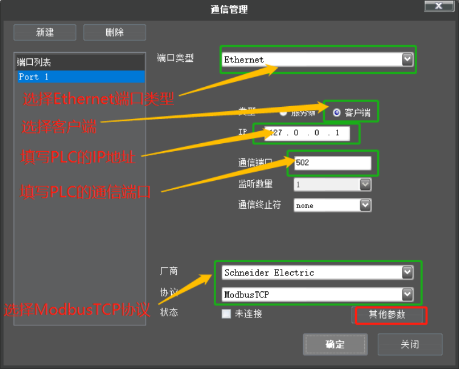
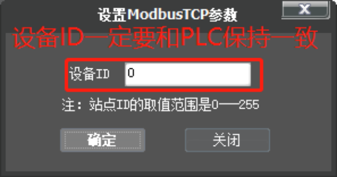
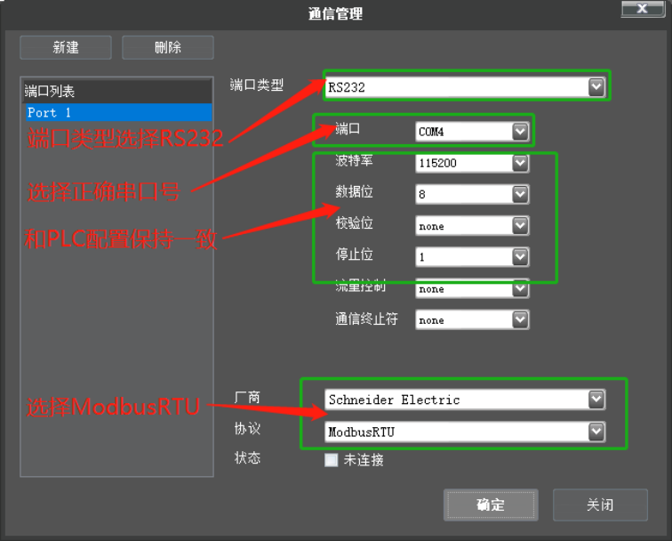
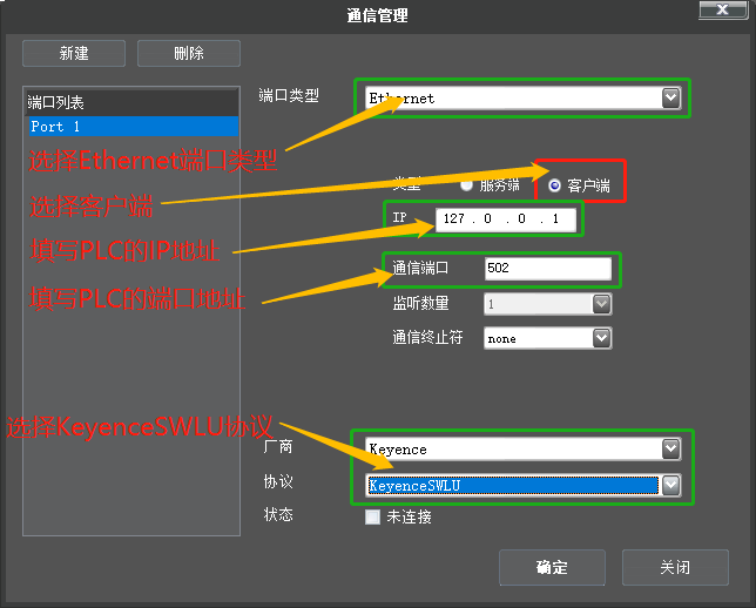
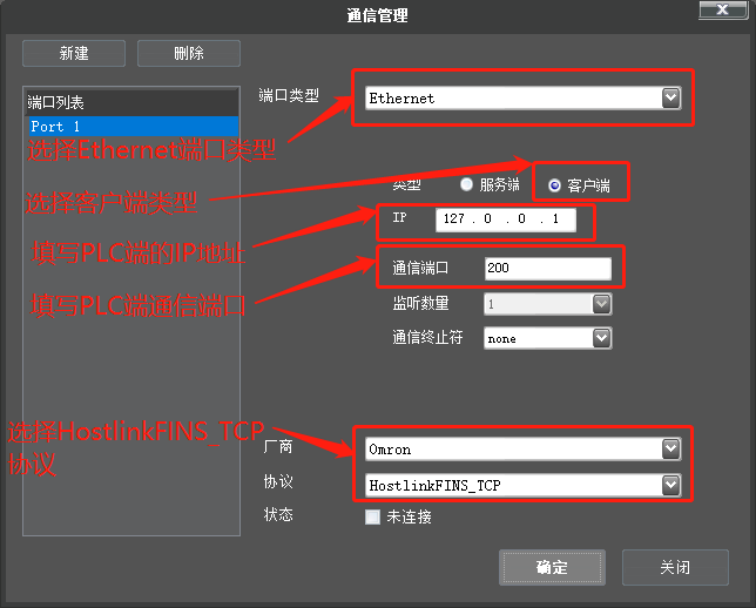
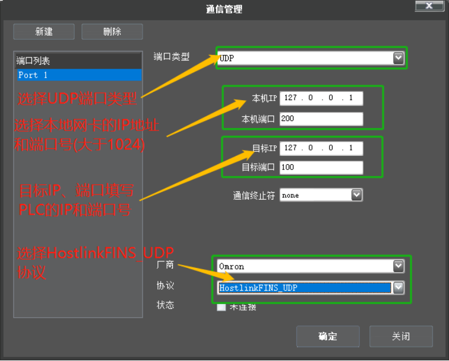

PLC厂商列表及协议说明：
| 协议 | 通信方式 | PLC厂商 | 软件封装协议 | 支持的数据区域 | 备注 |
|---|---|---|---|---|---|
| 三菱MX | 网口/串口 | 三菱 | MxComponent | M、D、X、Y | D、X、Y只支持单地址读写 |
| FINS | 网口 | 欧姆龙 | HostlinkFINS_TCP、HostlinkFINS_UDP | D、CIO | 无 |
| KeyenceSWLU | 网口 | 基恩士 | KeyenceSWLU | DM、EM、W、IM、CM、VM、R、B、MR、LR、CR、VB | 无 |
| Modbus | 网口/串口 | 施耐德、汇川、台达 | ModbusTCP、ModbusRTU（串口）、ModbusASCII（串口） | 保持寄存器(4x) | 暂不支持线圈、输入线圈、输入寄存器 |
| MEWTOCOL | 串口 | 松下 | Mewtocol | N/A | 无 |
| ADS | 网口 | 倍福 | ADS | N/A | ADS协议配置请参考”ADS通信环境搭建V1.0.docx” |
| S7Comm | 网口 | 西门子 | S7Comm | I、M、Q、DB | 读写string类型数据时地址需要向后偏移2个字节 |
注意
若待使用的PLC厂商或者使用的协议未在支持清单中，请按照现场实际使用状况将PLC硬件(包括通讯模块)、电源线、网线等成套寄回北京测试部，进行验证。
Mewtocol协议配置
ModbusTCP协议配置

“其他参数“配置：

ModbusRTU协议配置

KeyenceSWLU协议配置

HostlinkFINS_TCP协议配置

HostlinkFINS_UDP协议配置
